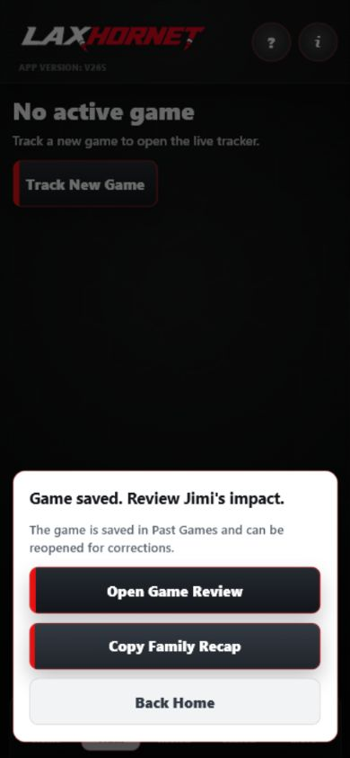
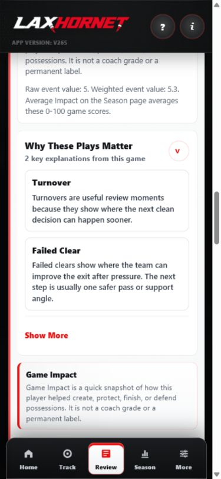
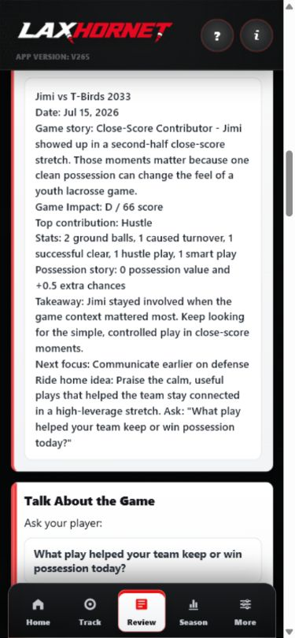

Differentiate your program
Offer families more than schedules and standings. Give them a tool that shows effort, possession, decision making, and progress.

For youth and competitive club lacrosse programs
LaxHornet gives presidents, directors, officers, and coaches a practical value add: a mobile-first lacrosse tracker that turns game events into clear reviews, family recaps, season trends, and one next focus for the player.



LaxHornet is more than a stat sheet. These pages explain the program value, development model, tracking framework, family experience, coach alignment, rollout path, and access controls behind the product.
How LaxHornet can help clubs differentiate, communicate, and support families.
For Players Player DevelopmentHow game events become review moments, trends, and one next focus.
For Evaluators Tracking FrameworkThe lacrosse-specific event model behind possession, production, and impact.
For Families Parent ExperienceWhat parents and players see before, during, and after a game.
For Staff Coach AlignmentHow coaches can use LaxHornet context without turning it into a grading system.
For Admins Rollout GuideA practical path for piloting LaxHornet with one team or a full organization.
For Officers Access and TrustTeam codes, roster matching, parent approvals, offline use, and privacy posture.
LaxHornet is built for real lacrosse parents, fast sidelines, and busy coaches. It helps your program give families a shared development language while keeping player access controlled by team and roster.
Offer families more than schedules and standings. Give them a tool that shows effort, possession, decision making, and progress.
Game Review and Share Recap turn a fast game into plain-language takeaways parents can discuss on the ride home.
Players can see a focused next step after each game, making development conversations more specific and less emotional.
Team codes, roster matching, and parent approvals help keep tracking tied to the right player and team context.
Goals still matter, but lacrosse development also lives in ground balls, clears, rides, caused turnovers, smart plays, hustle, saves, faceoff work, and decisions under pressure. LaxHornet keeps those moments visible.
Each saved game can become a review that explains what happened, why key plays mattered, how the player helped the team, and what to focus on next.
A factual view of scoring, possession, defense, clearing, goalie play, faceoffs, and support events.
A previewable summary that separates recorded contributions from cautious interpretation.
One optional, behavior-specific idea worth watching in the next game.
Start with a pilot team or offer it as a program resource across age groups. LaxHornet works in the browser, can be added to the iPhone Home Screen, and is designed for unreliable sideline connectivity.
Admins create teams, preload rosters, and share the correct team code with approved families.
Parents request access with a team code and jersey number so tracking stays connected to the right rostered player.
Use quick game-day buttons, share a read-only live view, and review the story after the final whistle.
If your program wants a practical development tool for players, parents, and coaches, LaxHornet is ready for a club walkthrough.